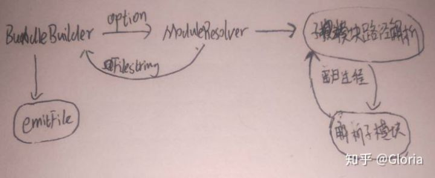

最新动态
设置
10条新动态
sunny
赞同该回答
26分钟前
Webpack基本架构浅析
不再显示
为什么Webpack
目前为止，Webpack已经拥有39.9k的star，在前端代码打包器领域内应该算是无敌的存在了吧。Webpack强大的生态圈和丰富的解决方案使得我们在日常开发中很难逃脱它的魔爪。如果能学习到它背后的思路... 显示全部 362
目前为止，Webpack已经拥有39.9k的star，在前端代码打包器领域内应该算是无敌的存在了吧。Webpack强大的生态圈和丰富的解决方案使得我们在日常开发中很难逃脱它的魔爪。如果能学习到它背后的思路... 显示全部 362
文章webpack版本为3.6.0
前言
随着掌握的前端基础知识越来越多，对技术的要求逐渐不满足于实现即可，技术到了瓶颈期，自己也曾尝试写过一些开源库，不过很少有满意的作品，通常没迭代几个版本就没有耐心继续维护了。通常是面临的情形是前期设计思路太过简单导致后期扩展的时候需要重构大量的代码（GG吧~），就好比一坨屎，再怎么装点，都很难把它当成蛋糕吃下去。
我认为，突破这个瓶颈的关键就是学会深入理解优秀开源库背后的思路。有人可能会说，我用xxx已经很久了，能够熟练使用它解决各种棘手问题，对于它，我已经充分理解了。我想说的是，即便你对于它的使用已经达到了炉火纯青的程度，但是站在使用者角度理解再“深”能有多深呢，不过是坐井观天罢了。
为什么Webpack
目前为止，Webpack已经拥有39.9k的star，在前端代码打包器领域内应该算是无敌的存在了吧。Webpack强大的生态圈和丰富的解决方案使得我们在日常开发中很难逃脱它的魔爪。如果能学习到它背后的思路，对于技能树的完善和水平层次的提高应该是非常有好处的。
概要
如果要全面总结webpack的实现，估计写10篇文章都不一定够。为了更加清晰地get到webpack的设计思路，会隐去webpack的大部分功能实现。
以实现简单的js模块打包功能为背景，文章分为3部分：
- BundleBuilder基本架构
- Webpack基本架构
- 学到了些什么
相信你在阅读完本文后会对Webpack的架构有个大概的了解，这应该会对你继续深入理解webpack其它功能的实现以及编写插件会有所帮助。
BundleBuilder基本架构
简单到不能再简单的js模块打包器
示意图
BundleBuilder对象
- BundleBuilder对象接收并处理外部配置
- 根据配置选择不同的ModuleResolver
- 使用ModuleResolver接收配置得到最终文件内容
- 生成打包后的文件